Medios diagnósticos en neurología avanzada
El diagnóstico de los trastornos del sistema nervioso requiere un examen clínico exhaustivo (evaluación de reflejos, pares craneales, fuerza y cognición) como paso previo y fundamental para guiar el uso racional de las pruebas neurobiológicas complementarias.
Análisis de laboratorio y biomarcadores
Monitoreo metabólico y hematológico
Hemograma completo (con grupo sanguíneo y factor Rh) y mediciones de función renal (urea, creatinina), glucosa y electrolitos séricos para descartar encefalopatías metabólicas.
Biomarcadores y marcadores tumorales
Detección de proteínas o péptidos en sangre como indicadores de neurodegeneración avanzada (p. ej. Alzheimer) o monitorización de marcadores oncológicos (AFP, CEA, beta-hCG) para identificar precozmente neoplasias del sistema nervioso.
Cuidados de enfermería en el monitoreo metabólico, hematológico y de biomarcadores
Antes
Verificar identidad, revisar la solicitud y antecedentes que influyan en los resultados, confirmar ayuno o suspensión de fármacos y explicar la finalidad de los análisis para reducir la ansiedad.
Durante
Aplicar asepsia y bioseguridad, verificar la identificación de los tubos y el manejo del material, y vigilar reacciones adversas como mareos, ansiedad o síncope vasovagal.
Después
Vigilar el sitio de punción (sangrado, hematomas), garantizar el envío correcto de las muestras, registrar las intervenciones y orientar sobre resultados y seguimiento.
Punción lumbar y líquido cefalorraquídeo (LCR)
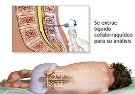
Concepto
Procedimiento invasivo que introduce una aguja espinal en el espacio subaracnoideo (entre L3-L4 o L4-L5) para extraer una muestra de LCR para análisis bioquímico, citológico y microbiológico.
Utilidad clínica
Acciones y cuidados de enfermería en la punción lumbar
Antes
Verificar el consentimiento informado, comprobar ausencia de alergias a anestésicos o antisépticos, revisar las pruebas de coagulación y explicar los pasos para mitigar la ansiedad.
Durante
Posicionar al paciente en posición fetal (decúbito lateral con rodillas al pecho) o sentado con la espalda arqueada para abrir los espacios intervertebrales, con estricta asepsia.
Después
Reposo absoluto en decúbito supino durante varias horas para evitar la pérdida de presión licuoral, hidratación oral abundante y vigilancia de la cefalea post-punción.
Medios diagnósticos por imagen (neuroimagen)
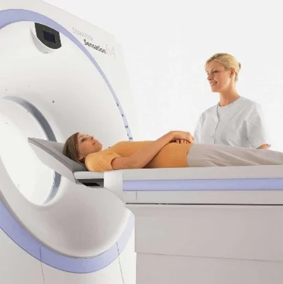
Tomografía axial computarizada (TC)
Técnica rápida con rayos X. Examen de elección en emergencias para evaluar hueso, descartar masas y diferenciar un ACV hemorrágico de uno isquémico.
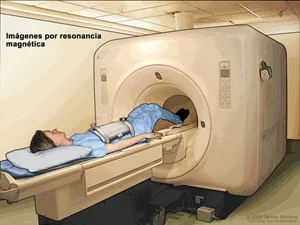
Resonancia magnética nuclear (RMN)
Campos magnéticos y radiofrecuencia (sin radiación). Altísima resolución para tejidos blandos, tronco cerebral y estructuras internas.
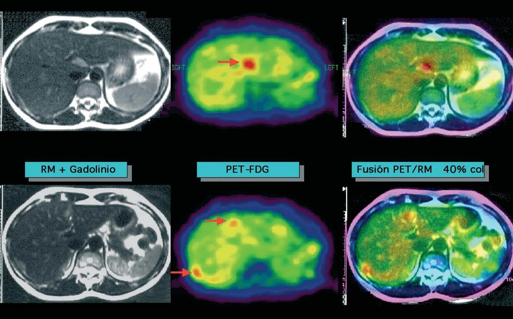
Tomografía por emisión de positrones (PET)
Imagen funcional que mide la actividad metabólica (consumo de glucosa). Clave en focos epilépticos y estadificación oncológica.
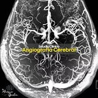
Arteriograma / angiografía cerebral
Visualización dinámica e invasiva de los vasos cerebrales con contraste. Estándar de oro para aneurismas y malformaciones arteriovenosas (MAV).
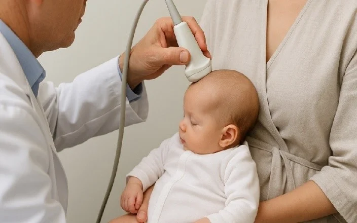
Ultrasonido transfontanelar
Ecografía inocua en menores de 2 años; usa la fontanela como ventana acústica para detectar hidrocefalia, hemorragias o malformaciones.
Cuidados de enfermería en los estudios de neuroimagen
Antes
Verificar identidad y antecedentes (alergias a contraste, función renal, implantes metálicos), comprobar ayuno o retiro de objetos metálicos e informar sobre el procedimiento para reducir la ansiedad.
Durante
Mantener seguridad y bioseguridad, supervisar el posicionamiento para imágenes de calidad y vigilar reacciones adversas, especialmente con medios de contraste.
Después
Monitorizar el estado clínico y posibles efectos del contraste, verificar estabilidad antes del alta, fomentar hidratación y registrar el procedimiento y el seguimiento.
Pruebas electrofisiológicas (eléctricas)
Electroencefalograma (EEG)
Registro de la actividad bioeléctrica de la corteza cerebral. Esencial en el diagnóstico de la epilepsia, evaluación de comas y trastornos del sueño.
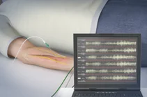
Electromiograma (EMG)
Analiza la salud de las fibras musculares y las neuronas motoras, evaluando la unión neuromuscular y los nervios periféricos.
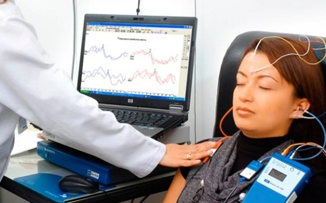
Potenciales evocados
Registro de la respuesta del SNC ante estímulos sensoriales (visuales, auditivos o somatosensoriales). Útil para evidenciar desmielinización subclínica en la esclerosis múltiple.
Anatomía patológica (biopsias tisulares neurológicas)
Técnicas invasivas reservadas para casos complejos donde los estudios analíticos y de neuroimagen no logran ser concluyentes para determinar la causa exacta de una lesión nerviosa o muscular.
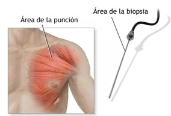
Biopsia de músculo
Extracción de tejido muscular para identificar patrones inflamatorios (miositis) o distrofias musculares genéticas.
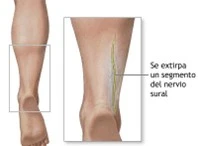
Biopsia de nervio
Remoción de un nervio periférico (habitualmente el sural) para diagnosticar neuropatías periféricas complejas o vasculitis.
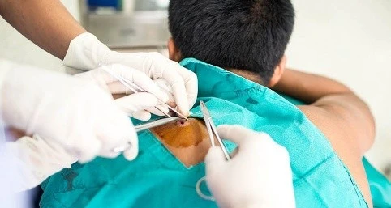
Biopsia de piel
Técnica mínimamente invasiva para cuantificar la densidad de fibras nerviosas pequeñas intraepidérmicas y confirmar una neuropatía de fibra pequeña.
Cuidados de enfermería en las biopsias tisulares neurológicas
Antes
Verificar identidad, antecedentes, alergias y fármacos de riesgo (especialmente anticoagulantes), confirmar el consentimiento informado e informar sobre el objetivo y los cuidados posteriores.
Durante
Mantener bioseguridad y asepsia, colaborar con el equipo, vigilar dolor, sangrado o reacciones adversas y brindar apoyo emocional para el confort.
Después
Monitorizar signos vitales y complicaciones (hemorragias, hematomas, infección), realizar cuidados locales, educar sobre signos de alarma y enviar la muestra a histopatología.